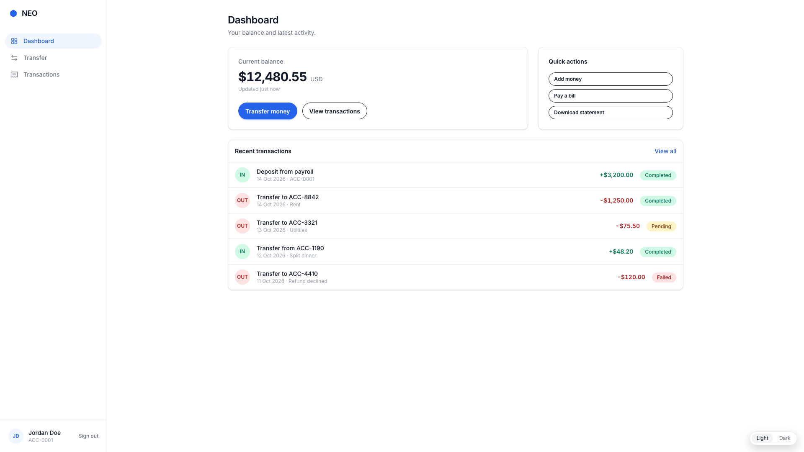
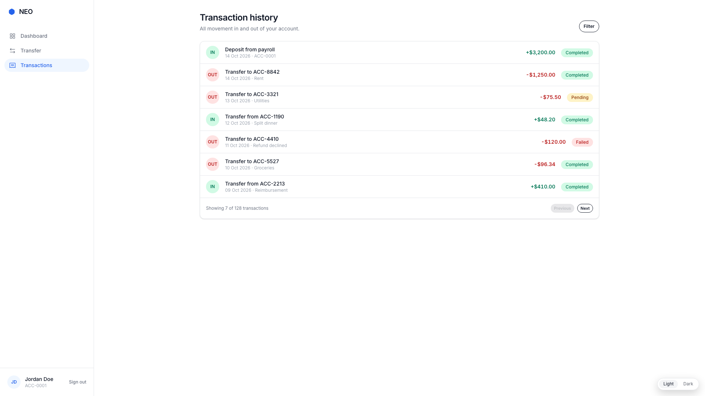

Instant transfers
Send money to any NEO account by ID. The saga debits and credits atomically, so a transfer either completes fully or compensates cleanly.
Open an account in minutes, watch your balance update the moment a transfer settles, and send money to any NEO account by ID — all behind bank-grade session security.
No monthly fees · No minimum balance · Synthetic demo data

A focused set of features that make everyday banking effortless — no feature bloat, no hidden fees.
Send money to any NEO account by ID. The saga debits and credits atomically, so a transfer either completes fully or compensates cleanly.
Argon2id password hashing, RS256 JWT sessions with rotating refresh tokens, and authorisation checks on every account-scoped request.
Your balance and transaction history update the moment the saga confirms a movement — amounts are stored as integer cents, never floats.
Every security-relevant event lands in an append-only audit log inside the owning service's keyspace, correlated end to end.
NEO Bank denies by default: every protected endpoint validates a JWT, every account-scoped query is authorised against verified ownership, and cross-account access returns 404 rather than leaking existence.
Idempotency-Key
No. NEO Bank is a software demonstration. It uses synthetic data, processes no real money, and makes no claim of regulatory compliance.
Asynchronously. The Transfer Service orchestrates a saga over Kafka: it issues debit and credit commands to the Account Service, which applies them with Cassandra lightweight transactions. Failures trigger compensation, and every step is idempotent.
Yes — the entire platform is open source: Go microservices, React frontend, Cassandra, Kafka, Docker Compose, and Terraform. See the repository linked in the footer.
Copy .env.example to .env, fill in the
JWT keys, and run docker compose up --build. The
frontend is served on port 3000 and the API gateway on 8080.
Register an account and watch the saga do the rest.
Get started